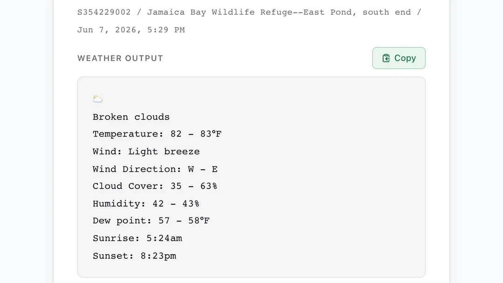

Weather
Paste an eBird checklist ID and get a weather and tide summary ready to drop into the checklist comment, or look up the conditions where you are now, or the forecast for any place and time ahead. The Weather/tide Planner lays out the coming sunrises and sunsets, each with its tide and forecast weather.

